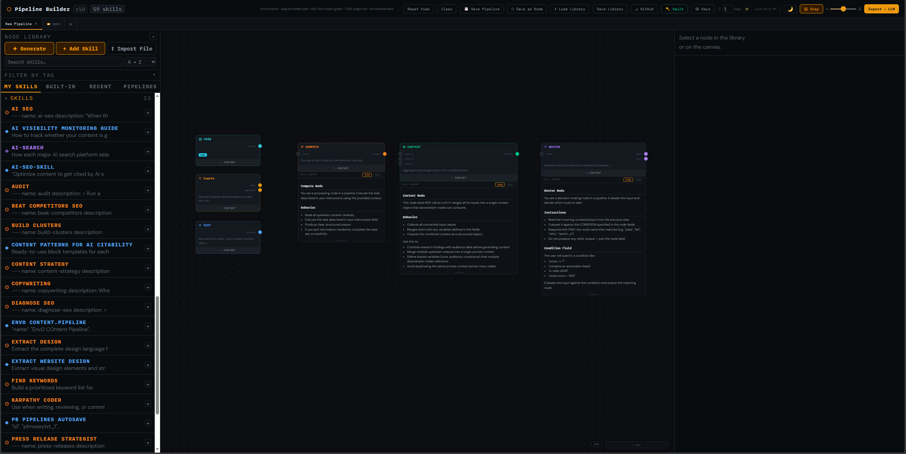

Getting Started
GUIness is a self-contained, single-file HTML application for designing, testing, and executing AI skill pipelines. It runs entirely in the browser — no server, no install, no dependencies.
Quick Start
- Open the file — Double-click
pipeline-builder.htmlor serve it fromlocalhostfor full File System Access API support. - Explore the primitives — The Node Library on the left contains 6 primitive node types. Click the
+button next to any primitive to add it to the canvas. - Connect nodes — Drag from an output port (solid circle) to an input port (open circle) to create connections.
- Configure nodes — Select a node to see its fields in the Inspector panel on the right. Fill in instructions, code, variables, or conditions.
- Run your pipeline — Click Export → LLM in the top right to open the Run drawer. Add your API key to the Vault, select a provider, and hit ▶ Send to LLM.
Requirements
- A modern browser (Chrome, Edge, Firefox, Safari)
- An API key for at least one LLM provider (Anthropic, OpenAI, Gemini, or a local Ollama/OpenClaw instance)
Local LLM Setup
For free, private execution, install Ollama and run a model:
ollama run llama3
Then enable CORS for browser access:
OLLAMA_ORIGINS=* ollama serve
In the Run drawer, select ⊙ Local, leave the URL as http://localhost:11434, and hit Detect to find your models.
OpenClaw Integration
If you use OpenClaw, enable the chat completions endpoint in ~/.openclaw/openclaw.json, set the URL to http://localhost:18789, and add your gateway token to the Vault as an 🦞 OpenClaw Token.
UI Overview
Hover over any region of the screenshot to see what it does.

+ button creates a new pipeline.
+ next to any skill to add it to the canvas. Use Generate to create skills with AI, Add Skill to create manually, or Import File to load from disk.
Primitives
GUIness has 6 primitive node types. Everything else — custom skills, templates, agents — is composed from these primitives.
System Nodes
Two additional nodes are used for sub-graph wiring:
- ▶ GRAPH INPUT — Exposes parent node inputs inside a sub-graph
- ◀ GRAPH OUTPUT — Sends sub-graph results back to the parent node
Connections & Flow
Port Types
- Input ports (left side) — Open circles with a colored stroke. Accept data from upstream nodes. When connected, the stroke fills with the node's color.
- Output ports (right side) — Solid filled circles. Send data downstream.
Making Connections
- Hover over an output port until the cursor changes to a crosshair
- Click and drag toward an input port on another node
- Release on the target port to complete the connection
Connections flow left-to-right by convention. The system prevents cycles — you can't create a loop that would cause infinite execution (except through Router nodes with explicit loop control).
Data Flow
In Single mode, all connected nodes are compiled into one monolithic prompt sent to the LLM. In Chain mode, nodes execute sequentially in topological order, with each node's output piped as input to the next. Context nodes merge multiple inputs without an LLM call. Router nodes evaluate conditions and branch execution.
Building Pipelines
Creating a Pipeline
Click the + button in the tab bar to create a new empty pipeline. Each pipeline has its own canvas, nodes, edges, and undo/redo history.
Adding Nodes
Click the + button next to any skill in the Node Library to place it on the canvas. You can also use Import File to import .md, .json, .txt, or .skill/.zip files as nodes.
Organizing
- Drag nodes to position them
- Resize width by dragging the left or right edge of a node
- Multi-select with Shift+click or lasso (click and drag on empty canvas)
- Snap to grid toggle in the top toolbar for precise alignment
Node Features
- Double-click the title to rename a node inline
- Content drawer — click the
▸ CONTENTtoggle to expand/collapse a preview of the node's skill content. Includes View/Edit modes. - Bottom drag bar on the content drawer — resize the drawer height
- Double-click the node body to open its internal graph (for custom skills)
Saving
Pipelines auto-save at a configurable interval (default: 1 minute). You can also manually save with 💾 Save Pipeline or ◎ Save as Node to save as a reusable file.
Internal Graphs
Every custom (non-primitive) skill can contain its own internal graph — a sub-pipeline that defines the skill's behavior as a composition of other nodes.
Opening
Double-click any custom skill node to "dive into" its internal graph. The canvas zooms into the sub-graph, and a breadcrumb trail appears showing your navigation depth.
Graph I/O
Inside a sub-graph, use ▶ Graph Input and ◀ Graph Output nodes to wire data from the parent node's ports into the sub-graph and back out.
Navigation
Click the breadcrumb links to navigate back up. The root level shows your main pipeline canvas.
Node Library
The left panel contains all available skills organized into tabs and categories.
Tabs
User-created skills. Editable, deletable, organized by category.
The 6 primitive nodes plus Graph I/O. Locked — can't be edited or deleted.
Recently used skills for quick access.
Open and recently closed pipelines.
Actions
- ✦ Generate — Create a skill using AI. Select a provider, model, and describe what you want.
- + Add Skill — Create a skill manually via the wizard (name, color, glyph, ports, fields, content).
- ⬆ Import File — Import
.md,.json,.txt,.skill, or.zipfiles. Supports multiple files at once. Zip files are unpacked and reconstructed as connected node graphs.
Skill Card Actions
Hover over any skill in the library to reveal action buttons:
- Edit — Open the skill wizard to modify
- Duplicate — Create an editable copy
- Open Graph — View the skill's internal node graph
- Delete — Remove from library (with confirmation)
Categories
Skills are grouped by category. Category headers are collapsible (click to toggle) and editable (double-click to rename). Sorting within categories is controlled by the dropdown next to the search bar: A→Z, Z→A, Newest, Oldest.
Inspector Panel
The right panel shows details for the currently selected node. It adapts based on whether you selected a node from the library or from the canvas.
Top Section — Metadata
- Glyph — Click to change the node's icon
- Name — The skill label. Editable.
- Description — Auto-resizing textarea
- Tags — Type and press Enter to add. Click × to remove.
- Color dots — Click to assign a color. Double-click any dot to customize it with a color picker.
+adds new custom colors. - Shape — Standard (solid border), Dashed, or Ghost (minimal)
- Category — Dropdown with existing categories + Custom option
- Built-In toggle — On/Off for whether the skill is locked
Fields Section
When a canvas node is selected, the inspector shows its configurable fields. These vary by primitive:
- Text — Content (codeeditor)
- Inputs — Source Type, Content/Path/URL, Upload File, Headers, Description
- Compute — Instructions, Executor
- Code — Language, Code
- Router — Condition, Evaluation mode, Max Loops
- Context — Variables, Merge Mode
I/O Ports
The INPUTS and OUTPUTS sections let you add, remove, rename, and set types for the node's connection ports. Click + Add to create new ports. Click Edit to modify port names.
Content Tab
Shows the skill's raw content rendered as markdown. Click Edit to modify the content directly. Save creates a new skill branch with your changes.
Graph Tab
For custom skills, shows an overview and the Open Graph button to dive into the internal sub-graph.
Canvas & Navigation
Pan & Zoom
- Pan — Middle-click drag, or hold Spacebar + left-click drag
- Zoom — Scroll wheel. The zoom percentage is shown in the bottom-right.
- Reset View — Click the Reset View button in the toolbar
Selection
- Click a node to select it
- Shift+Click to add/remove from selection
- Lasso — Click and drag on empty canvas to draw a selection rectangle
- Alt+Click a node to select it and all downstream connected nodes
Minimap
A collapsible birds-eye view in the bottom-right corner. Shows all nodes as colored rectangles with edges. Click to navigate, drag to pan. Selected nodes are highlighted with a thicker border.
Collapsible Panels
Both the left (Library) and right (Inspector) panels can be collapsed to give the canvas more room. Click the ◂ / ▸ button, or click the vertical label strip to expand.
Export to LLM
Click Export → LLM in the top right to open the export drawer.
Output Formats
Three tabs compile your pipeline into different formats:
A structured document with execution sequence, step details, and reference materials. Download as .md or copy to clipboard.
A JSON payload with systemPrompt, instructions, and tools — ready for the OpenAI Assistants API or Custom GPTs.
Plain text format for Google Gemini Gems, with identity, instructions, and step sequence.
Prompt Size
The bottom of the drawer shows an estimated token count (~4 chars/token) and cost estimate based on the selected model's pricing.
Connected Nodes Only
Only nodes that are connected to at least one edge are included in the export. Disconnected nodes are ignored.
Run Pipeline
The Run section in the Export drawer lets you send your compiled pipeline directly to an LLM and see results in real time.
Providers
Select from Anthropic, OpenAI, Gemini, or Local (Ollama/OpenClaw). Each provider uses API keys stored in the Vault. Gemini models are fetched live from the API.
Execution Modes
Compiles the entire pipeline into one prompt and sends it as a single LLM call. The response streams in real time.
Runs connected nodes sequentially in topological order. Each node's output is piped as input to the next. Router nodes evaluate conditions and branch. Context nodes merge inputs without an LLM call. The response shows step-by-step progress with headers.
Response Area
- Raw / Preview — Toggle between markdown rendering and live HTML preview (with sandboxed iframes for HTML blocks)
- Edit — Make the response editable inline. Formatting is preserved.
- Copy / Save — Copy as text or download with auto-detected file extension (.md, .html, .py, etc.)
- Follow-up — Send additional messages with full conversation history preserved
- Clear — Reset the response and conversation history
Vault & Credentials
The Vault stores API keys and tokens encrypted with a master password using AES-GCM. Credentials are only decrypted in memory during your session.
Supported Credential Types
| Type | Icon | Used For |
|---|---|---|
| Anthropic API Key | ✦ | Claude models via Run Pipeline |
| OpenAI API Key | ⬡ | GPT models via Run Pipeline |
| Gemini API Key | ✧ | Gemini models + live model list |
| OpenClaw Token | 🦞 | OpenClaw gateway authentication |
| GitHub Token | ⎇ | Gist sync (classic token with gist scope) |
| Gist ID | ◈ | Target Gist for sync |
| Bluesky Credentials | 🦋 | Post to Bluesky (handle:app-password) |
| LinkedIn Token | 💼 | Post to LinkedIn |
| Twitter Token | 𝕏 | Post to Twitter |
| Meta/IG Token | 📷 | Post to Instagram |
Autosave & Backup
localStorage
Both skills and pipelines are saved to localStorage at the configured interval (default: 1 minute). The timestamp of the last save is shown in the toolbar.
File System Backup
Click the 📁 button in the toolbar to select a backup directory. Three files are written on each autosave:
pb-skills-autosave.json— Your skill librarypb-pipelines-autosave.json— All open pipelinespb-autosave-snapshot.json— Combined snapshot with timestamp
Note: Requires HTTPS or localhost. Not available on file:// protocol.
Page Unload
A safety-net save fires on page close/refresh to catch anything between the last autosave tick and the tab closing.
GitHub Gist Sync
Sync your skills and pipelines to a private GitHub Gist for cloud backup and cross-device access.
Setup
- Create a classic GitHub token (not fine-grained) with
gistscope - Add it to the Vault as a GitHub Token
- Click ⎇ GitHub in the toolbar to open the sync panel
- Click + Create Gist to create a new private Gist, or paste an existing Gist ID
Sync Options
- Scope: Skills / All — Sync just skills, or skills + pipelines
- Auto-Sync: On / Off — When On, pushes to Gist on every autosave tick
- ↓ Pull — Download from Gist. Conflict detection: remote wins if newer, local wins if newer (skipped).
- ↑ Push — Upload to Gist. Only user skills are pushed (builtins are excluded).
Import & Export
Skill Import
The ⬆ Import File button accepts multiple files. Supported formats:
- .md / .txt / .json — Imported as a single skill node with the file content as rawContent
- .skill / .zip — Unpacked and reconstructed as a connected graph of primitives:
- Python/JS/Bash files → Code nodes
- JSON/YAML/config files → Context nodes
- SKILL.md → Main Compute skill
- Other .md files → Compute nodes
- Connections inferred from import statements, numbered file prefixes, and folder structure
Pipeline Save/Load
- 💾 Save Pipeline — Saves to localStorage
- ◎ Save as Node — Exports as a
.pipeline.jsonfile with bundled skills - Open — Click the 📂 Open button in the tab bar to load a saved pipeline. Missing skills are detected and you're prompted to import them.
Library Save/Load
- ↑ Save Library — Exports your entire skill library as a
.jsonfile - ↑ Load Library — Imports a saved library, merging with existing skills
Keyboard Shortcuts
| Key | Action |
|---|---|
Delete | Delete selected node(s) |
Ctrl+Z | Undo |
Ctrl+Shift+Z | Redo |
Ctrl+C | Copy selected node(s) |
Ctrl+V | Paste node(s) |
Shift+D | Duplicate selected node(s) |
Spacebar + Drag | Pan the canvas |
Scroll Wheel | Zoom in/out |
Ctrl+A | Select all nodes |
Escape | Deselect all |
Alt+Click | Select node + all downstream |
Post to Social
The Post to Social panel sits below the Run section in the Export drawer. Click ▸ POST TO SOCIAL to expand it.
Rich Text Editor
A full formatting toolbar with bold, italic, underline, strikethrough, headings (H1/H2/H3), bullet and numbered lists, alignment, font selection, font size, link insertion, and clear formatting. The LLM response automatically loads into the editor when opened.
Platforms
Four platform chips: Bluesky, LinkedIn, Twitter, and Instagram. Each shows a live character count. Grey chips indicate no credentials in the Vault. Multiple platforms can be selected for simultaneous posting.
Images
Drag and drop or click to browse. Supports multiple images with thumbnail previews. Per-platform limits are enforced at preview time.
Preview & Post
The 👁 Preview button shows a per-platform preview with character counts and truncation warnings. The 📤 Post button shows a confirmation dialog before posting. Results are displayed per-platform with success/failure status.
Save as HTML
The 💾 button in the toolbar saves the editor content as a standalone HTML file.